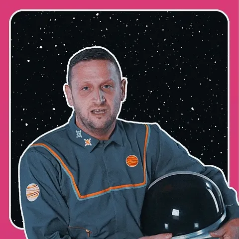

Maybe EdTech is the answer? (feat. Noam Gerstein, CEO and founder of Bina School)
Why are we still educating children for an economy that won't exist when they graduate?

Welcome. I’m Lawrence. Thanks for coming out tonight. You could have been anywhere in the world, and you’re here with me. I appreciate that. P.S. i invest in startups.
So we have a youth unemployment problem. We need a fix. Likely something about raising status on blue collar work. But thats the easy part. You know what’s gonna be really hard? Reforming education.
In “A curriculum for the AI age”, I wrote: “Why are we still educating children for an economy that won't exist when they graduate?” >

I proposed a new curriculum based around four principles: purpose, wisdom, empathy, and physicality. Sure, not revolutionary, but I mean, turning the tanker around isn’t going to be easy. I also wrote:
“The answer is not more screens, YouTube and AI tutors. Yes, personalized learning is exciting. I get it. I’m using Claude for flashcards too. But sadly for me, as an investor, the answer is not EdTech. Adding more technology to an outdated educational model only digitizes its flaws. Instead, we should look to educational approaches that already cultivate the distinctly human capacities that will remain valuable in an AI-dominated future”
Well, what if, and here me out: I was wrong? Unlikely I know, but possible? What if the answer is indeed EdTech? That would be great for me personally as an investor. Go out and invest in all the EdTech. Structural changes are afoot. On the demand side, homeschooling is booming. Parents are spending more money than ever before on education. And on the supply side? Well, AI isn’t it. Personalised tutors in our pockets. Fully immersive on-demand learning experiences tailored to everything we’ve ever said on a computer.
I like the sound of the TAM, honestly.
So, I spoke to Noam Gerstein, CEO and founder of Bina School, who has built an actual online school. She went full EdTech.
She says we're witnessing not just the growth of not only digital education alternatives, but the beginning of a complete industry transformation that will merge schooling and academic publishing into something entirely new. I hadn’t really considered the implications of this consolidation and if she is right then it will change the market dynamics fundamentally. It’s sort of a full-stack school: soup to nuts. Content, delivery, and credentials. You make money two ways in business right? Bundling and unbundling. So here we are.
3 Key Takeaways
Low-cost disruption: Online-first education models like Bina represent classic disruption by eliminating real estate costs and teacher admin overhead that traditional schools cannot abandon without dismantling their core operations. Digital-native schools deliver education that is initially "good enough" for early adopters but rapidly improving, forcing traditional institutions into the classic disruption dilemma: they cannot adopt the disruptor's cost structure without cannibalizing their existing business model.
Agency as the New Academic Achievement: The shift from preparing students for predictable careers to developing high-agency individuals represents a profound change. While AI will outperform humans at many cognitive tasks, the ability to adapt quickly, make moral decisions, and navigate uncertainty becomes the core human contribution. This reframes success from standardised test performance to … something else? What else can be measured?
Orchestration not Delivery: The merger of schooling and educational publishing dissolves the artificial separation between content creation and learning delivery. Traditional models forced a linear pipeline where publishers created static materials and students consumed pre-determined sequences. Digital-native education creates responsive ecosystems where content emerges organically from curriculum standards, real-time student data, and teacher intuition.

Hey Noam, so we've seen these edtech hype cycles before, right? The K-12 online market is supposedly going to double, but is this actually different this time or just more of the same?
Let's step back and talk about what schooling is and our available resources. When you look at the education business, only two types of companies make money sustainably: old-schools and the big publishing houses. And both of these are facing this massive tsunami of change.
Most people building edtech create field-specific solutions with learners in mind (you know, like an amazing multiplication app or tools to track progression). But here's the thing about selling to parents - it almost never works because customer acquisition costs blow up way past lifetime value. That's why edtech has this terrible reputation with investors.
So these originally b2c companies pivot to selling to schools as multipliers. But that's between really hard and impossible. Schools are designed for preservation. They don't have the capacity or the needed infrastructure, so they spit newness out.
Don't get me wrong - the traditional system did extraordinary things. We moved most of the world from illiteracy to literacy. It's an incredible systemic design; it was built with a specific set of resources and for a set of goals regarding what humans needed to know and be able to do (those fitting for back then).
But two things have completely changed: what we're educating toward, and what resources we have available now. The "what for" part has shifted dramatically. What you and I needed to know growing up versus what kids need today - it's a totally different world. Educational systems mirror the society they're operating in, right? Hunter-gatherers taught hunting and gathering. Our schools mirror industrial society. But people don't work like that anymore.
What do you mean when you say people don't work like that anymore?
Look at how schools actually spend money. There are two massive cost buckets: real estate and teacher time. And here's the crazy part - teachers only spend 32 to 50% of their time with students. The rest? They're pulling gum out of kids' hair, grading papers, making lesson plans in isolation, sitting in meetings where nobody knows why they're even there. And most teachers hate this work; they want to build relationships with their students.
So when designing a new system, you must answer both questions: toward what goal, and with what resources. We're closer than ever to figuring out what kids everywhere need to know - there's this emerging global canon of knowledge, skills, and fundamental human dispositions.
At bina, we look at real estate costs and think "nope." We don't lack spaces fit for kids in the world. The population is shrinking in many places, and public spaces are empty. Homes are where people spend most of their time anyway. Having a fancy building doesn't make education better; it means you are spending on the wrong thing.
And for teacher time, how can we ensure the most essential parts of education are those we invest in? Is there a way for unprecedented quality to be offered in a way that's financially sustainable and scalable? How do we create fabulous learning experiences that were never possible before? How do we make evaluation happen "automagically"? How do we keep the brightest teachers focused on small groups having genuine relationships all day?
So you're basically saying traditional schools are just wasting their two biggest resources?
Exactly. And because these resources and goals have shifted so much, traditional schools will not keep operating as they do now. Same with the old publishing houses. The way we can create and deliver content now is just completely different.
My bet - and it's pretty wild, but whatever - is that these two massive industries will merge into one. This isn't just a cycle, it's a fundamental shift. Though I like thinking of it more as evolution than revolution. We're building on all the incredible work both industries have done. It's not like we're throwing everything out and starting over. More like, "This foundation is amazing, now let's make it work for today's world."
OK, so what does this merged industry actually look like day-to-day?
In the not very far future, I see these roll-up models where you have centralized, continuously adapting content with kids learning alongside peers from all over the world in small groups. Teachers are continually trained and upskilled. And then physically, kids are in what used to be schools, but now they're more like makerspaces, labs, sports halls - these flexible 24-hour community spaces with mixed ages, maybe seniors and kids together.
Keep all the local relationships and rooted cultural matters, AND you're getting the absolute best education available globally. And the economics work out to cost less than the average taxpayer pays to support education right now.
That's interesting about cost because education just keeps getting more expensive, like healthcare. How does tech actually make this cheaper?
Technology should make things cheaper and up the quality of experiences; that's the whole point. The problem with traditional schools is that if teachers want to do more testing or collect better data, it requires so many resources that they spend even less time with kids. If they want to offer quality content, they meet the same issue. It's a resource allocation heartbreak story.
Now, we can have content that emerges based on what the teacher wants to do with that specific class at that moment, scaffolded by standards and dressed to measure. We definitely need to work on multiplication. Now we're going to do it by riding seahorses because Anna loves seahorses and she's really struggling with sevens. We can create these learning environments that are customized instantly for that group of kids at that moment- still hitting all the standards, but totally focused on who's actually in front of you, what they know and can do right now.
You keep mentioning this "global canon" - what does that actually include?
Our world has less predictability because everything moves so fast, and we need to be practical about this. Everyone talks about "preparing kids for future jobs," but I'm like, let's prepare them for tomorrow morning first. Tomorrow morning is a good place to start.
For that, they need solid skills to build and follow their moral compass, adapt, make decisions, learn effectively learning, understand their wants and needs, and most importantly, initiate. As foundations, they need enough context of the world to navigate it - literacy, numeracy, digital & financial literacy, and plenty of diverse cultures to grasp how things work globally. They need personal, cultural, and environmental awareness to be fulfilled, conscientious human beings.
This sounds like a pretty big shift from schools just being job prep. Is that what you're going for?
Job prep and education towards solid values are not separate things. If you think about what humans are actually going to be doing, they need to be able to build (and shift when needed) their moral grounds to make wise decisions quickly. "Jobs" feels narrow to me as it is part of "doing work meaningfully," which is the goal.
Happy, fulfilled people are those who work in the service of something they care about. Taking initiative will likely be the main human contribution. We're in this weird time where we can't really picture what these kids will be busy with as adults. But we can give them tools to be busy in meaningful ways.
You mentioned something about agency. Why do you think the current system has created people who need so much hand-holding?
If the whole point is to be right instead of solving problems, then the result is low agency. Mistakes, even small ones, are expensive and are the best way to learn.
So how do you design learning where it's about actually learning, not just getting the right answer?
All of the above, really. One thing I love about bina is that there's no dominant culture because we have kids from everywhere. Everyone's an "other". Most of our learners speak multiple languages, and research shows that bilingual and trilingual kids think differently about what's possible compared to monolingual kids.
When there's no single "right" culture, the idea of "what's right" inherently gets questioned.
We don't do testing. We do continuous evaluation. We teach kids how to take tests if they're planning to transition to traditional schools, but our continuous evaluation looks at growth with detailed measurements. We break down what they need to know into tiny pieces. Since we're digital, we know exactly where they are on their learning path with extremely high accuracy. And so do they, their families, and educators.
We assume truth lies at the intersections, and if we know it, we can navigate it. Can Anna count to 100? What does Mom think? What does the teacher think? What does the system think? If the answers are close, we did our job well. Luckily, we can look at the actual evidence (e.g., let's watch a snippet from the last lesson) and talk about it. It's an entirely different conversation.
Project-based learning ensures Kids decide on their goals, which involve how they prove their learning, and what else they need to know and be able to do to improve their work.
And here's something that might sound controversial: education is essentially humans entertaining themselves on the highest order. This is how we stay busy as a society. We make decisions together about what's worth doing. So it better be challenging fun, hard fun, but it has to be fun.
But the standard argument for testing is that it ensures equality, right? Without standardized tests, some schools do better than others and you get inequality.
I disagree with that statement. Testing originally came from needing to understand where students are, so you can actually help them. That was the whole point - you need data to make good decisions.
When it becomes the only success measurement, it is also the only aspect we optimize for. And that's terrible. Plus, it's just such an ancient way to collect information. Why would we keep doing this?
We can do continuous evaluation and get super precise information about exactly where they are in their learning. And we can track things that were never possible - like how well they give feedback to friends about their artwork? How exactly have they lately developed their skills in kindly offering help? How well do they collaborate?
OK but if I'm a head teacher reading this, I might think "great, let's just buy AI personalized learning tools for everyone." Why doesn't that solve 90% of the problem?
Companies are trying exactly that. Alpha Schools have 2 hours of AI tutoring apps a day. Foundational learning, at its best, involves strong emotional components. It requires this emotionally held space with expert teachers and other kids you care about, and who care about you. You need to be working with people, not just next to them. Great learning happens with friction! We need interactions for that and a lot of them.
AI tools work great when you're operating digitally. But in physical spaces, they can't collect nearly as much data, let alone analyze it. Siloed info is very last century. If you do one thing on one app for half an hour, and there is some data on your learning, that's nice, but not contextualized. Your learning journey, who you are, and what you're trying to do next are essential contexts for marvellous learning experiences.
Unlike completely child-led approaches - forest schools and stuff - bina does not believe kids have enough context to completely guide their learning. As a society, we have made some decisions about what people should know at different stages. The world has standards, and we want to ensure their future educational careers are never blocked. Research is pretty clear that young developing brains have these windows of learning opportunity where certain things are way easier to learn. Miss the window, and it's much harder forever.
Can you give me an example of these windows?
As mentioned, the issue with letting young kids choose the entire course of their learning is that they don't have the context to understand implications, what tools they will need, and they haven't practiced decision making, so expecting them to do it on such a fundamental matter is unfair. They might not be interested in something essential and just miss it entirely. We get kids from forest schools who are 10 years old and can't read because their hearts weren't in it, and no adult took responsibility to guide their hearts there. We can help them catch up, but that gap is always going to be there.
Extreme standardization has immense problems too. Most people have no idea why they're learning what they're learning. The "why" is completely missing for everyone - kids, teachers, parents, the system itself. It's stressful and unpleasant for everyone and doesn't really connect to their needs.
What gets me excited about digitally native learning is that we can finally combine these approaches. Before, because of resource constraints, you could only pick one way.
Walk me through what a typical day actually looks like at bina.
All our classes are live and collaborative in real-time with teachers and other kids. Nobody's ever alone in front of a screen. Everything is about working together. We spend a quarter of every day explicitly on social-emotional learning. We don't just expect kids to figure out how to be good humans by accident.
We are together 5 hours a day, 5 days a week, ±200 days a year. Educators hold the narrative while correlating to our scope and sequence. We teach thematically, every month and a half, we move from one biome to the other, allowing us to change perspectives, as we are likely to be the most diverse school in the world, the history, geography, art, and cultural choices are bound to the current biome. The length of the lessons changes according to the learner's developmental stage. Every period includes movement and some motor skills. We play to learn.
What about the physical stuff though? This feels like the biggest worry parents would have about online-only school.
Social and physical aren't the same thing for this generation. What feels “real” to them differs from what is real to our parents. They need digital social skills and physical social skills. Both matter.
Our model handles the digital social piece with great thoughtfulness and care. AND, kids absolutely need to play football and smell each other's armpits and all that physical stuff.
We now do three things: We support families with activities constantly. Anna learned to count to five today. Here's a game you can play with her." In addition, we do this thing we call "the annoying grandma move," where it's like, "Lee was talking about football in class today, there's a team 10 minutes from you, we signed her up for Monday at 3, can you make it?" We actively push families to get physically active in their local communities.
We also offer camps where families can come stargaze together if they want. And we're constantly connecting families when someone's traveling - "hey, these are the other bina families in your area."
What about the business model? You said earlier that B2C edtech usually fails because acquiring customers costs more than you can make from them.
We're solving that by building a complete school instead of just one piece. When providing complete education, the lifetime value works because you're serving the whole kid for years, not just teaching one skill.
As we grow, I want to partner with coworking spaces, cultural institutions, and offices to create hubs where kids can be more flexible in mixed-age settings. They're still getting the best education ever possible, no matter their locality, but they take breaks together and do physical and locally cultural activities together.
This is a first step towards a "roll-up" approach, which is one of the ways we plan to move forward - building infrastructure that could eventually work together with old schools, optimize academics, school ops, training, assessment, and introduce a global perspective. At the same time, they maintain physical infrastructure and community engagement.
What's the timeline for this industry transformation you're predicting?
The shifts are already happening. It's not whether, but how fast we can build systems that work for families who want alternatives now and create the foundation for something fundamentally better.
We're proving how education can work when you optimize for human potential instead of industrial efficiency. The data we're collecting, the relationships we're building, and the results we're getting will shape this new industry.
The families choosing bina right now are early adopters. But the principles we're proving - that you can deliver better education more efficiently by eliminating the wrong constraints and embracing the right technologies - will eventually reshape how all kids learn.
Whether that happens because existing institutions adapt or new models replace them, the economic and educational advantages are too obvious and grand to ignore. The question is whether the old institutions can collaborate (fast enough), or if transformation will naturally happen through eventual replacement.
Thanks Noam, readers go to www.thebinaschool.com to learn more and if you are an investor, get in touch with Noam at noamgerstein@thebinaschool.com
thanks, bye, etc. x